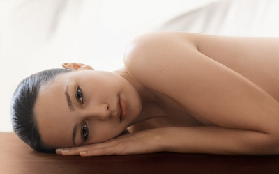

Vartalohoidot

Klassinen hieronta
Hieronnalla on useita vaikutuksia mm. kivun lievittyminen, verenkierron paraneminen lihaskudoksessa ja kireiden lihasten
rentoutumisen kautta lisää nivelen liikkuvuutta.
Raskaushieronta
Raskaana voi käydä hieronnassa eikä isokaan vauvavatsa ole esteenä. Selkähieronnassa istut tuolilla nojaten pehmusteisiin.
Niskahieronta tehdään selinmakuulla tai istuen.
Aromaattinen hieronta
Aromaattinen hieronta on rentouttava kokemus kiireen ja stressin keskellä. Hoidossa yhdistyvät kevyt hieronta sekä 100%
luonnollinen, silkinsileä ja aistisi herättävä Decleor-balsami.
Aromaattinen kuumakivihieronta
Kuumakivihieronnan vaikutus on rentouttava, voimakkaasti stressiä ja kipua laukaiseva. Hoidossa yhdistyvät kuumien kivien
miellyttävä lämpö sekä kevyt ja rentouttava aromaattinen hieronta Decleor-balsamilla.
Shiatsu-akupainanta
Shiatsu on japanilainen kehoterapian muoto, joka perustuu kiinalaisen akupainannan perinteeseen. Kokonaisvaltaisessa hoidossa
painellaan akupunktiokanavia sekä akupunktiopisteitä ja avataan niiden tukoksia. Hoito tehdään futon-patjalla. Ota mukaan pehmeät
ja joustavat vaatteet.
Voit tutustua hieronnan hinnastoon tästä